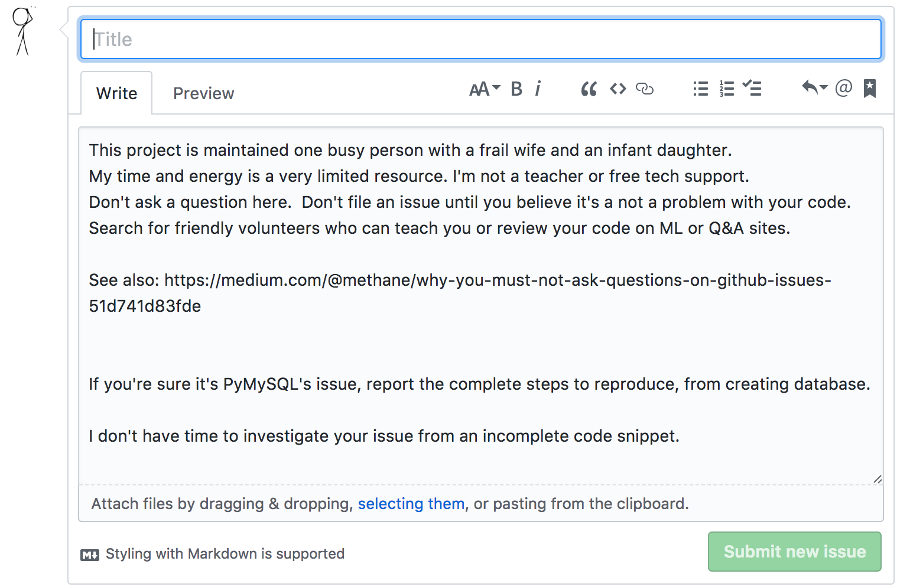

How to write open source at work
Misha Behersky
Kyiv.py #20
About me

- some experience with Python
- work at DataRobot for 2+ months
- gte 1 open source projects created
Not a contributor to
- aiohttp
- tornado
- twisted
- pyramid
- cherrypy
- flask
reveal.js
You will learn how to write readable code for free

You may be hired by Google

You will earn higher Guido number

- GN=1 if you have commits with GvR in same repository
- GN=2 if you have commits with person who have commits with GvR in same repository
- you got the idea
So how to start? Just watch projects you care about

Report Bugs

Try to write failing unit test or small snippet that reproduces problem
Try not to ask questions on github issues, unless you are willing contribute docs
Ask general question on ML or SO first, github does not have forum features.
Help to improve docs

Guess who is bitdancer?
If you think you are way too cool to contribute docs

Python core dev contributed docs for aiopg!
Measure coverage and write tests!

Find TODOs and FIXMEx in source code and fix them

If you can contribute feature/fix, make several small PRs instead of one huge

No tests no PR!

Recap
- Contribute to project you care about
- Read the source code
- Help to answer questions
- Write docs
- Write tests
- Contribute features
- Have Fun!
Stay in touch
and check open positions at
datarobot.com/careers